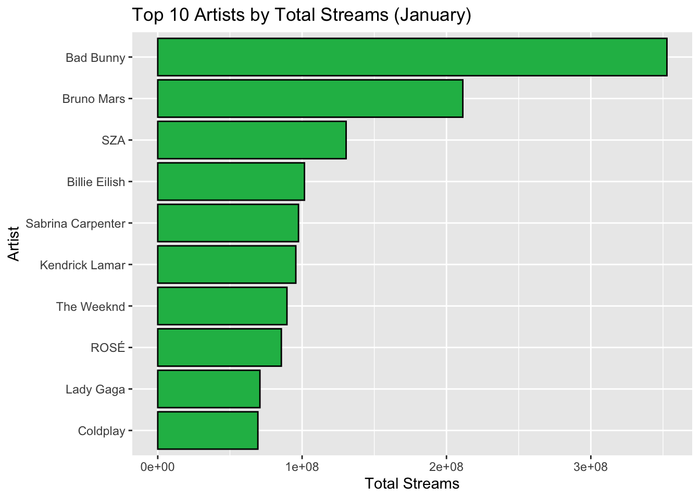
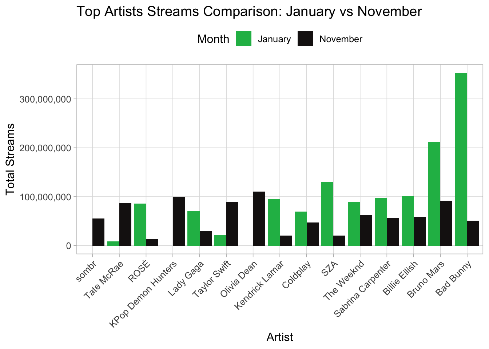

“How do the most-streamed artists at the start of the year compare to the end of the year?”
Data collection
The data used in this project was obtained from charts.spotify.com, which publishes weekly rankings of the most-streamed songs on the platform. The two data sets used were from January 3rd-9th 2025, and nonmember 21-27th 2025 (most recent set at time of download). Both of these data sets were taken from the global charts, which show a cumulative ranking from all Spotify users worldwide.
Each data set was downloaded as a CSV (comma-separated values) file. The charts are compiled by Spotify using their internal streaming logs, which record how many times each track was played by users in that week. The data is free to access but requires a free Spotify account in order to download the datasets.
The variables in the data set are as follows:
rank – the position of the track in the weekly chart
uri – a unique Spotify identifier for each track
artist_names – the name(s) of the artist(s) associated with each song
track_name – the name of the song
streams – the total number of Spotify streams for that track during the chart week
weeks_on_chart – how many weeks the track has appeared in the chart
Research question
This visualisation aims to answer the question :
“How do the most-streamed artists at the start of the year (January) compare to the end of the year (November)?”
The visualisation will highlight which artists have the highest number of total streams in each month, how the popularity of these artists changes between the start and end of the year, and whether new artists emerge in November that were not present in January.
By creating this visualisation, the project aims to make the changes in artist popularity from the start to the end of the year digestible and easy to understand.
Data wrangling
The first step taken was to load the required packages and read in the CSVs.
#load the packages required for the codelibrary(ggplot2)library(tidyverse)
── Attaching core tidyverse packages ──────────────────────── tidyverse 2.0.0 ──
✔ dplyr 1.1.4 ✔ readr 2.1.5
✔ forcats 1.0.1 ✔ stringr 1.5.2
✔ lubridate 1.9.4 ✔ tibble 3.3.0
✔ purrr 1.1.0 ✔ tidyr 1.3.1
── Conflicts ────────────────────────────────────────── tidyverse_conflicts() ──
✖ dplyr::filter() masks stats::filter()
✖ dplyr::lag() masks stats::lag()
ℹ Use the conflicted package (<http://conflicted.r-lib.org/>) to force all conflicts to become errors
#read in the csv data filesspotify_jan <-read.csv("spotify-jan.csv")spotify_nov <-read.csv("spotify-nov.csv")#have a look at the data head(spotify_jan)
rank uri artist_names
1 1 spotify:track:2plbrEY59IikOBgBGLjaoe Lady Gaga, Bruno Mars
2 2 spotify:track:4wJ5Qq0jBN4ajy7ouZIV1c ROSÉ, Bruno Mars
3 3 spotify:track:7ne4VBA60CxGM75vw0EYad Gracie Abrams
4 4 spotify:track:6dOtVTDdiauQNBQEDOtlAB Billie Eilish
5 5 spotify:track:7tI8dRuH2Yc6RuoTjxo4dU Jimin
6 6 spotify:track:2CGNAOSuO1MEFCbBRgUzjd Kendrick Lamar, SZA
track_name
1 Die With A Smile
2 APT.
3 That’s So True
4 BIRDS OF A FEATHER
5 Who
6 luther (with sza)
source peak_rank
1 Interscope 1
2 Atlantic Records 1
3 Gracie Abrams, under exclusive license to Interscope Records 3
4 Darkroom/Interscope Records 1
5 BIGHIT MUSIC 1
6 pgLang, under exclusive license to Interscope Records 3
previous_rank weeks_on_chart streams
1 1 21 70779585
2 2 12 64078762
3 4 12 47295577
4 3 34 46903880
5 5 25 32153248
6 7 7 30513094
head(spotify_nov)
rank uri
1 1 spotify:track:53iuhJlwXhSER5J2IYYv1W
2 2 spotify:track:1CPZ5BxNNd0n0nF4Orb9JS
3 3 spotify:track:1qbmS6ep2hbBRaEZFpn7BX
4 4 spotify:track:7qjZnBKE73H4Oxkopwulqe
5 5 spotify:track:2RkZ5LkEzeHGRsmDqKwmaJ
6 6 spotify:track:6sGIMrtIzQjdzNndVxe397
artist_names
1 Taylor Swift
2 HUNTR/X, EJAE, AUDREY NUNA, REI AMI, KPop Demon Hunters Cast
3 Olivia Dean
4 sombr
5 Alex Warren
6 Olivia Dean
track_name source peak_rank previous_rank
1 The Fate of Ophelia Taylor Swift 1 1
2 Golden K-Pop Demon Hunters 1 2
3 Man I Need PLG - Capitol 3 3
4 back to friends Warner Records 1 4
5 Ordinary Atlantic Records 1 5
6 So Easy (To Fall In Love) PLG - Capitol 6 6
weeks_on_chart streams
1 8 47728374
2 23 35973994
3 14 34134732
4 36 29822022
5 42 27859100
6 9 27454118
Initially, it was necessary to standardise the naming of KPop Demon Hunters. The film, released in June of this year, lists each contributing artist individually; however, for analytical purposes, all artists were grouped under the name KPop Demon Hunters. This adjustment was applied only to the November data set, as it is absent from the January dataset.
#rename any artist with "KPop demon" in the name to kpop demon huntersspotify_nov <- spotify_nov %>%mutate(artist_names =str_trim(artist_names),artist_names =ifelse(str_detect(artist_names, regex("KPop Demon", ignore_case =TRUE)),"KPop Demon Hunters", artist_names))
During data tidying, it was observed that some artists appeared multiple times, but streams from their collaborative tracks were not included in their individual totals. To address this and calculate the cumulative streams for all artists, the entries were separated by splitting the artist_names column at the commas.
#Split the artist_names into separate artists (e.g., "Bruno Mars, Lady Gaga" becomes "Bruno Mars" and "Lady Gaga"). Applied to both data setsjan_seperate <- spotify_jan %>%separate_rows(artist_names, sep =", ")nov_seperate <- spotify_nov %>%separate_rows(artist_names, sep =", ")if (any(grepl(",", jan_seperate$artist_names)) |any(grepl(",", nov_seperate$artist_names))) stop("Artist splitting failed") #sanity check
The next step involved grouping the artists by name, allowing the total streams from all of their songs to be combined and sorted in descending order to identify the top artists by cumulative streams.
#group by artist, add up streams and then rank them for both data sets#jan jan_top_artists <- jan_seperate %>%group_by(artist_names) %>%# Put all songs by the same artist togethersummarise(total_streams =sum(streams), # Add up all their streams.groups ="drop") %>%# Remove grouping boxesarrange(desc(total_streams)) # Sort from biggest to smallest#novnov_top_artists <- nov_seperate %>%group_by(artist_names) %>%# Put all songs by the same artist togethersummarise(total_streams =sum(streams), # Add up all their streams.groups ="drop") %>%# Remove grouping boxesarrange(desc(total_streams)) # Sort from biggest to smallest
Data visualisation checks
Once the data had been cleaned, visualisations were generated for both data sets to examine and compare differences in artist popularity. The x and y axes were swapped to improve readability of the artist names.
# Select top 10 artists from January and November in order to see the difference before making final visualisationjan_top10 <- jan_top_artists %>%slice_max(total_streams, n =10)# Create bar chartggplot(jan_top10, aes(x =reorder(artist_names, total_streams), y = total_streams)) +geom_col(fill ="#1DB954", color ="black") +coord_flip() +labs(title ="Top 10 Artists by Total Streams (January)", x ="Artist", y ="Total Streams")

#Novemevernov_top10 <- nov_top_artists %>%slice_max(total_streams, n =10)# Create bar chartggplot(nov_top10, aes(x =reorder(artist_names, total_streams), y = total_streams)) +geom_col(fill ="#1DB954", color ="black") +coord_flip() +labs(title ="Top 10 Artists by Total Streams (November)", x ="Artist", y ="Total Streams")
Next, it was necessary to combine the data sets and specificity which month the streaming data was from.
# Add a month label to each datasetjan_top_artists <- jan_top_artists %>%mutate(month ="January")nov_top_artists <- nov_top_artists %>%mutate(month ="November")# Combine both datasets into onecombined_artists <-bind_rows(jan_top_artists, nov_top_artists)
From the combined data, the top 10 artists were separated from each month.
top10_artists <- combined_artists %>%group_by(month) %>%slice_max(total_streams, n =10) %>%ungroup()#Create a full set of artist/month combinations for the top artists# This ensures every top artist has a row for each monthall_months <-expand_grid(artist_names =unique(top10_artists$artist_names),month =c("January", "November"))
# Join the actual streams to this complete grid# Missing artists, not appearing in a month, will have NAplot_data <- all_months %>%left_join(combined_artists, by =c("artist_names", "month")) %>%# Replace NA streams with 0 for artists missing in that monthmutate(total_streams =replace_na(total_streams, 0))
Final visualisaton
Final visualisation compares the total streams of the top artists in January and November to show how artist popularity changes across the year. By presenting the data side-by-side, it is easy to see which artists maintain consistent popularity, which experience increases or decreases in streaming, and how new artists emerge in the charts. The flipped axes improve readability of artist names, and distinct colours (Spotify colour pallet) for each month allow for quick month-to-month comparisons. This visualisation helps highlight trends such as the impact of new album releases, seasonal listening patterns, and shifts in listener preferences throughout the year.
# Plot side-by-side bar chartggplot(plot_data, aes(x =reorder(artist_names, total_streams), y = total_streams, fill = month)) +geom_col(position ="dodge") +#places bars for different months side by side for each artist (rather than stacked). This makes direct month-to-month comparisons easy.scale_fill_manual(values =c("January"="#1DB954", "November"="#191414")) +scale_y_continuous(labels = scales::comma) +labs(title ="Top Artists Streams Comparison: January vs November",x ="Artist",y ="Total Streams",fill ="Month" ) +theme_light(base_size =12) +theme(axis.text.x =element_text(angle =45, hjust =1),#tilts names on x axis so artist names to not overlaplegend.position ="top",panel.grid.minor =element_blank())

Analysis and next steps
From this data, it can be identified that most artists’ streams/popularity fluctuate throughout the year, whether that be due to a song or an album release. Bad Bunny was the most-streamed artist by far in January (even across both months), but dropped down to a pretty average weekly streams count by November. This is most likely due to the fact that he released an album that week in January. This could also conversely be seen with artists such as Taylor Swift, who released an album in October, so her streams were much higher in November than in January. If this data were to be looked at again, it could be interesting to look at such trends with album releases and how long after release the album drops off in popularity. For example, Sabrina Carpenter released an album in August of 2024 and 2025, but her November streams are lower than in January. This could suggest that her newer album had less of an impact than her older one. However, these trends would have to be properly analysed.
Throughout this project, I have learned how to clean and prepare real-world data for analysis, as well as create a visualisation from the data I have prepared. I also developed a better understanding of how data visualisation can be used to communicate trends in a way that is accessible and easy to interpret.
With more time and data, future work could include analysing multiple weeks or months to identify longer-term trends, seasonal patterns, and the sustained impact of album releases on artist popularity.